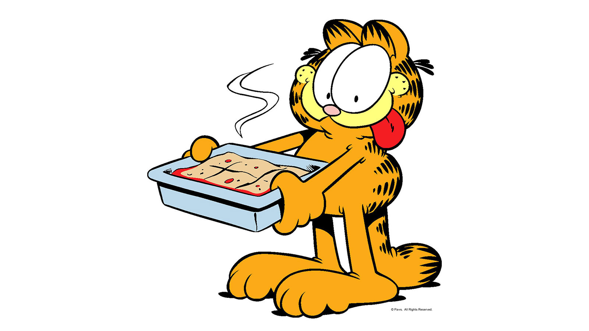

Lasagna

Description
An Italian dish of layers of cheese and meat. Baked to perfection. Loved by cats who also hate mondays.
Ingredients
- Cheese
- Meat
- Orange Cat (not optional)
Steps
- Layer cheese and meat on top of each other in glass oven-safe pan.
- Set oven to 425 degrees.
- Place pan in oven and let cook for 1 hour.
- Pull out pan and let cool for 15 minutes.
- Feed dish to cat!